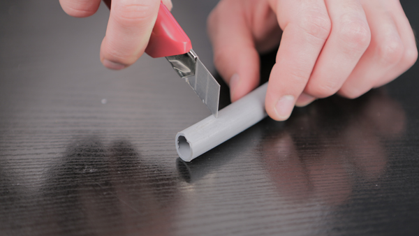
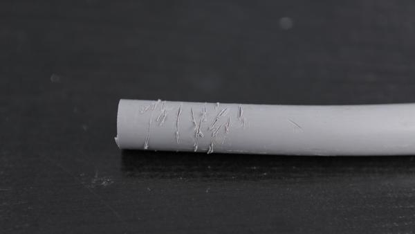
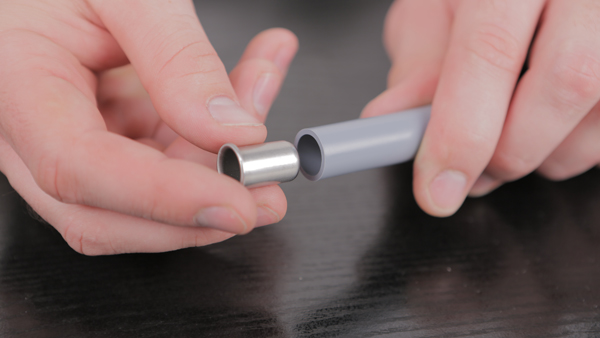
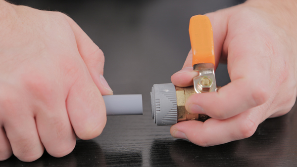
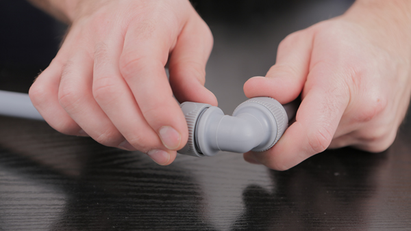
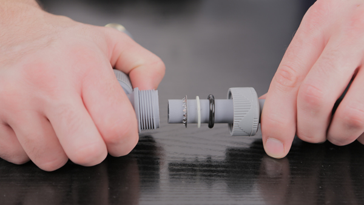

Видео
Инструкция по монтажу
1.Перед началом монтажа водопровода необходимо отрезать трубу нужной длины. Сделать это можно специальным труборезом или простым канцелярским ножом

2.Обратите внимание, что отрезанная труба должна быть ровной, без задиров, сколов и иных повреждений. В противном случае герметизация соединения может быть нарушена

3.В ровно отрезанный конец трубы для его укрепления вставляем металлическую гильзу

4.Затем, простым нажатием небольшой силы, до упора вставляем трубу в водяную розетку, шаровый кран или фитинг

5.Таким же образом, если необходимо обойти препятствие или просто изменить направление водоотвода, вставляем трубу в водопроводный уголок

6.Герметичность и надежность конструкции обеспечивают металлический зажим, кольцо из особо стойкой пластмассы и каучуковая прокладка. Система способна работать при рабочем давлении до 15 атм и температуре воды до 95 градусов по Цельсию

2.Обратите внимание, что отрезанная труба должна быть ровной, без задиров, сколов и иных повреждений. В противном случае герметизация соединения может быть нарушена
3.В ровно отрезанный конец трубы для его укрепления вставляем металлическую гильзу
4.Затем, простым нажатием небольшой силы, до упора вставляем трубу в водяную розетку, шаровый кран или фитинг
5.Таким же образом, если необходимо обойти препятствие или просто изменить направление водоотвода, вставляем трубу в водопроводный уголок
6.Герметичность и надежность конструкции обеспечивают металлический зажим, кольцо из особо стойкой пластмассы и каучуковая прокладка. Система способна работать при рабочем давлении до 15 атм и температуре воды до 95 градусов по Цельсию
Среди всего многообразия сантехники трудно выбрать систему, которая обладает абсолютным преимуществом перед всеми другими. Все без исключения фитинги и трубы проектировались инженерами и изготавливались на предприятиях с целью долгой и безупречной работы. Аварии и протечки, в своем подавляющем большинстве - не брак производителя, а человеческий фактор - вот основная причина неприятностей с водопроводом и отоплением. Важное отличие Южно-Корейских фитингов в том, что их конструкция сводит к нулю влияние "человеческого фактора" на мотаж системы, т.к. фитинг полностью собран на заводе. Не важно, кто вставит трубу в фитинг, новичок или опытный мастер - соединение будет всегда в точности таким, каким его проектировали корейские инженеры. Второе и основное приемущество Корейских фитингов - это скорость монтажных работ. Соотношение стоимости работ к стоимости комплектующих для этих работ обычно составляет 3 к 1. Поэтому основные денежные затраты приходятся на оплату труда сантехников, а не на закупку фитингов и труб. Выполняя сантехнические работы в пять - десять раз быстрее обычного, предприятия получают значительную экономию средств увеличив эффективность работы сантехников.
Особенности
Соотношение долговечности полибутена, полипропилена и полиэтилена (внутренний слой в металлопластиковых трубах) составляет 100:25:1. Поэтому производителю нет необходимости наращивать толщину и утяжелять трубы и фитинги для того, чтобы увеличить стойкость к температуре и давлению. И они, выглядя легкими и невесомыми выдерживают нагрузки которые недоступны конкурирующим системам. В данном разделе предлагаем рассмотреть сравнительную характеристику 3-х разных видов труб и фитингов.
Подробные технические характеристики и особенности нашей продукции находятся в подразделах. Древо раздела справа.
Сравнительные преимущества продукции
Почему ваш выбор - "Теплосервис-плюс"
Из всего многообразия продукции, рынок выберет то, что наиболее востребовано потребителем, где важную роль играет оптимальное сочетание следующих показателей:
- качество
- цена
- удобство
- стоимость работ
Приведенные ниже сравнительные графики показывают зависимость разрешенного рабочего давления от изменения температуры воды. Сравниваем три популярных вида труб и фитингов:
PB — полибутеновые фитинги и трубы (Южная Корея)
PPR — полипропиленовые фитинги и трубы (Чехия)
PEX/AL — металлопластиковые фитинги и трубы (Европа)
Ремонтопригодность
Важным значением для экономии средств является — ремотопригодность. Если принять ремонтопригодность водопровода из полибутена(PB)=100%, то ремонтопригодность металлопластика(PEX/Al) составит от 50 до 70%, а полипропилена (PPR), всего от 30 до 50%.
Особенность конструкций водопроводов из полибутена (РВ):
- быстрое изменение схемы водоотвода без потери материалов
- многократная пригодность уже использовавшихся ранее комплектующих
- скорость ремонта
Ценовые преимущества
Решающее значение в выборе может стать стоимость нашей продукции. Сравнив ее с металлопластиковыми и полипропиленовыми трубами и фитингами можно отметить два момента в пользу фитингов и труб изполибутена(PB) и термостойкого полиэтилена(PE-RT):
- водоразводка собранная из полибутеновых труб и фитингов дешевле на 30-100% чем собранная из европейских аналогов, но дороже на 10-15% своих "китайских" конкурентов
- скорость и простота сборки полибутеновых труб и фитингов уменьшает конечную стоимость собранного водопровода и существенно уменьшает трудозатраты. Это легко компенсирует разницу по стоимости даже с самыми дешевыми фитингами
- экономия времени при использовании полибутена(PB) в сравнении с полипропиленом более чем в 6-12 раз, в сравнении с металлопластиком в 4-8 раз
PB — полибутеновые фитинги и трубы — 6,5 руб./метр монтажа
PPR — полипропиленовые фитинги и трубы — 70руб./метр монтажа
PEX/AL — металлопластиковые фитинги и трубы — 50 руб./метр монтажа
Особенности монтажа различных водопроводных систем
Рассмотрим особенности PPR , PEX/AL, PB фитингов.
PPR фитинги:
- после термической сварки фитингов, необходим минимум 1 час перед проведением теста на качество соединения, это увеличивает время монтажных работ
- прокручивание трубы в момент сварки приводит к скрытому браку
- необходим дорогостоящий сварочный аппарат и оборудование
- фитинги не поддаются разборке и повторному применению
- в случае брака одного фитинга рекомендуется замена всей собранной разводки, либо трудоемкая замена бракованного элемента, в следствии - почти двукратное увеличение стоимости расходных материалов и трудозатрат
- сварка длинных труб трудоемка и требуется помощник
- требуется качественная организация рабочего места
- скорость монтажа составляет от 3 до 7 мин. на сборочную единицу
- требуется высокая квалификация монтажника
Pex/Al фитинги:
- Оослабление фитинга, требуется периодическая подтяжка для предотвращения протечек
- низкая пропускная способность из-за малого внутреннего диаметра (составляет 50% от аналогичных полибутеновых)
- невозможно вращать фитинг вокруг своей оси, это затрудняет монтаж в труднодоступных местах
- нет возможности повторного применения, т.к. в конструкции фитинга предусмотрены одноразовые уплотнительные кольца
- скорость монтажа составляет 3-5 мин на сборочную единицу
В отличии от PPR и Pex/Al фитингов не имеют перечисленных недостатков, рассмотрим их монтажные характеристики:
- скорость монтажа в десятки раз выше чем у других систем и составляет 3-5 сек. на сборочную единицу
- свободное вращение закрепленного фитинга на 360* обеспечивает легкий монтаж в труднодоступных местах
- многократный легкий монтаж и демонтаж, повторное использование фитинга
- быстрая проверка собранной системы, принцип - «сделал и забыл»
- PВ фитинги и трубы значительно легче по весу, чем металлические и требуют меньше затрат при транспортировке
- не требуется профессиональный сантехник и специальный инструмент, исключается вероятность собрать фитинг «ошибочно»
На примере этих упрощенных расчетов становится очевидным, что организации применяя в работе фитинги из полибутена добьются экономии от десятков до сотен тысяч рублей в зависимости от масштаба работ.
Для частного покупателя применение полибутена означает экономию времени и денег на скорости выполнения монтажных работ при этом не требуется специальный инструмент и навыки.
Итоги сравнения
- полное превосходство фитингов и труб из полибутена PB по качеству и техническим характеристикам
- быстрота и легкость сборки
- обеспечивает значительную экономию денежных средств
- монтажник, работая с фитингами и трубами из полибутена PB выполнит за месяц работу 5-6 бригад из двух человек, работающих с PPR и двух бригад работающих с Рex/Al
- вы избавитесь от необходимости затрачивать средства на дорогостоящий инструмент и оборудование для сварки труб PPR